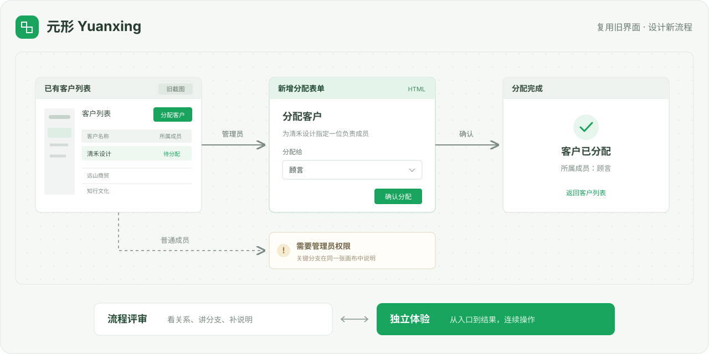

入口、分支、说明，放在一起。
整理页面关系，拖动、连线和打点批注。局部修改保留已有的人工整理。
打开评审示例 →人和 AI 共同设计产品的工作台
用原型、流程和说明，把意图表达清楚。
让团队能讨论、能体验，让 AI 根据明确反馈继续修改。
在线示例直接打开 · 本地项目可编辑 · MIT 开源

从一个具体需求开始
同一句需求，可能有不同理解。走一遍管理员与普通成员的路径，把操作条件和结果一起讨论清楚。
点击列表截图中的“分配客户”。旧界面保持原样。
选择负责成员，确认分配。新增部分使用 HTML。
结果页展示刚才选择的成员，完成这一段用户流程。
案例界面与数据均为虚构示例。
放进你现有的 AI 工作流
需要能读写本地文件、运行命令的 AI 助手，以及 Node.js 20+。
请安装 https://github.com/JasperLin2333/yuanxing 中的元形 Skill。先阅读 SKILL.md，按当前宿主的 Skill 目录规范安装，保留随包运行时与资源。安装后，基于我提供的需求和已有材料，生成团队可讨论的流程画布和可体验的原型；已有产品只修改本次涉及的部分。
npx skills add JasperLin2333/yuanxing --skill yuanxing使用元形。基于这张已有客户列表，只设计“分配客户”这次改动。把管理员和普通成员的流程放到画布上，并导出能独立体验的原型。
元形使用你现有的 AI 助手，本身无需额外配置模型 API Key。
查看完整安装说明 →下载离线包 →这个网站提供可直接体验的示例。制作自己的原型时，把元形安装到能读写本地文件、运行命令的 AI 助手中，项目保存在你选择的本地目录。
可以。截图设置点击热点，HTML 绑定控件跳转。不变的部分可以一直保留为截图。
导出的流程画布、需求文档和完整原型均为单个 HTML 文件，同事在浏览器打开即可查看，无需安装元形或启动服务。
当前支持自包含 HTML、本地 CSS、图片、普通 JavaScript，以及 PNG、JPEG、WebP 截图。框架工程、外部 CDN、真实登录和网络接口需要先适配。查看项目格式。
先试一段你熟悉的流程